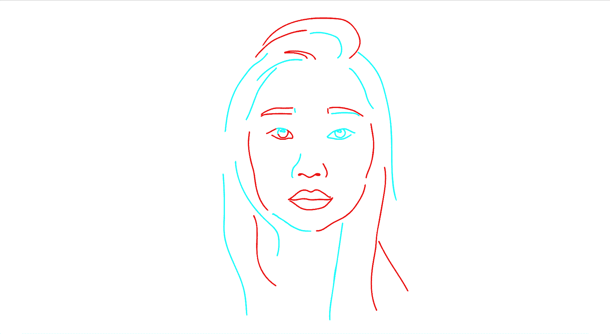
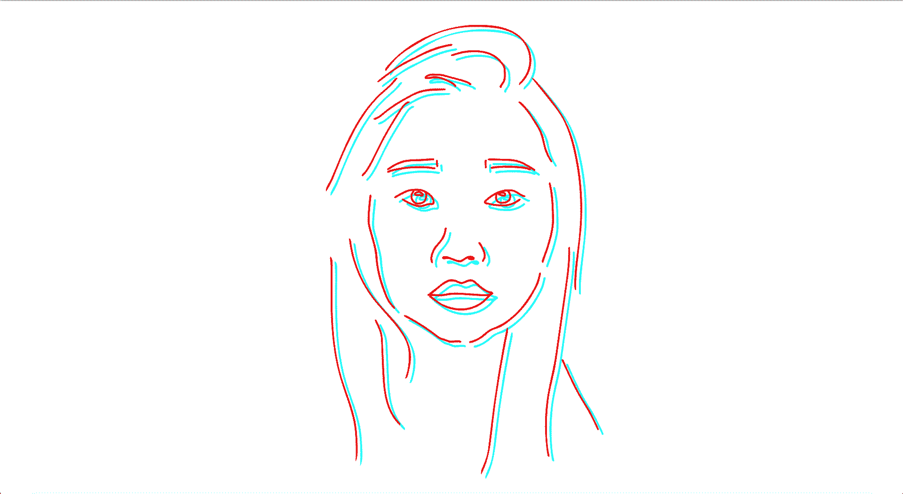

handmade book compilation of doodle animation flipbooks

collection being viewed through glasses, in my studio
an independent art project to explore identity
adobe animate / collage / bookbinding / exhibition
This collection, meant to be viewed through red and cyan tinted lenses (i.e., 3d glasses), is an exploration of identity as a combination of seemingly polarized components.
handmade book compilation of doodle animation flipbooks
collection being viewed through glasses, in my studio